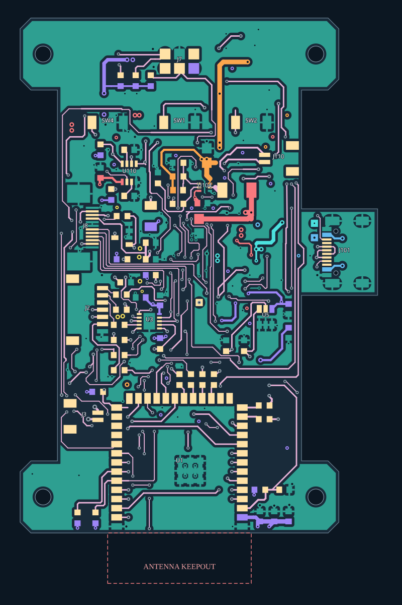
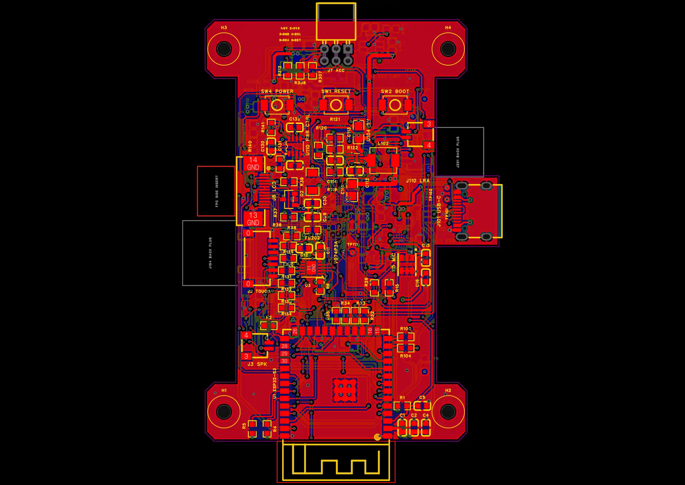

器灵 · PCB · 2026-10-25
V074P3A：补全可安全接地的表层铜区
已在嘉立创当前工程保存。补9个接地过孔，让被走线隔开的较大空区接入L2地平面。
+114 mm²顶层地铜轮廓
+84 mm²底层地铜轮廓
9个新增GND过孔
0检出的短路 / 断网 / 重叠
本轮修复主控两侧、扬声器接口下方、屏幕总线和板中央，以及背面固定耳、J104旁、FPC左侧与USB区域。新增铜区已在实际Gerber中核对接地；没有开启保留孤岛铜。
修改前后对比
绿色为GND；紫色为3V3，橙色为5V，其他颜色为不同网络。按键切换顶层/底层；两图均采用从板顶向下的相同坐标视角。图示来自原生几何，制造连通性另由实际Gerber验证。

修改前 · V074P3 修改后 · V074P3A
修改后 · V074P3A接地点与检查
| 标记 | 位置 | 原生坐标 | 规格 |
|---|
| G1 | 主控右侧 | 12, 92 mm | GND · Ø0.60 / 钻孔0.30 mm |
| G2 | 主控内部左侧 | -4.8, 89.5 mm | GND · Ø0.60 / 钻孔0.30 mm |
| G3 | 扬声器接口下方 | -11, 93.8 mm | GND · Ø0.60 / 钻孔0.30 mm |
| G4 | 屏幕总线下方 | 4.2, 103 mm | GND · Ø0.60 / 钻孔0.30 mm |
| G5 | 板中央 | 4.1, 105.05 mm | GND · Ø0.60 / 钻孔0.30 mm |
| G6 | 背面H2固定耳 | 18.5, 88 mm | GND · Ø0.60 / 钻孔0.30 mm |
| G7 | 背面J104旁 | -15.2, 111.5 mm | GND · Ø0.60 / 钻孔0.30 mm |
| G8 | FPC左侧 | -15.7, 121.2 mm | GND · Ø0.60 / 钻孔0.30 mm |
| G9 | USB区域 | 18, 122 mm | GND · Ø0.60 / 钻孔0.30 mm |
主板1793段走线、129个元件位姿均保留，过孔373→382；适配板V0.2保持。所有新增孔双面盖油。L2仍为单片连续地；5V主铜带、加强段和USB局部地参考未改变；3V3平面保留连续并满足网络连通。
| 验证 | 结果 |
|---|
| 两板原生DRC / 未连接 | 0 / 0 |
| 实际Gerber跨网短接 / 断网 / 漏铜锚点 | 0 / 0 / 0 |
| 原理图与PCB逐引脚网表 | 一致 |
| 同面元件包络重叠 / 间距 / 天线禁铜 | 通过 |
| 钻孔坐标与原生匹配 | 主板382 / 适配板31 |
| 实际Gerber新增铜对异网最小间距 | 约0.203 mm（按0.1523 mm门槛核查） |
| 新增表层铜接地 | 实际Gerber逐片验证通过 |
辅助原生轮廓模型的4处“孤立片”已逐片回查：实际Gerber均连接GND焊盘或过孔。更正P3仅凭辅助模型把其中3处称为孤立铜的记录；无需为此误删铜或修改布线。
天线伸出区、板边/孔边安全间距、异网间隙及窄小不适合接地的空隙继续留空。目标是可靠接地与安全间距，不能把每个空隙都填满。
嘉立创原生预览

已保存的原生工程导出预览 · 丝印V074P3A
交付文件
打样沿用P3的板级验证边界：实屏FPC与线束针序、工厂USB阻抗确认、实物负载温升/RF/装配仍待验证。主板C114不贴，贴装请使用*_upload.csv。附件5V预算仍为400mA。没有使用自动布线，没有下单。
项目名仍为Spirit_V074N_Manual_Routed_Final_20261025；主板Spirit_JLC；最终工程SHA256：49e4de0bb00fd4bc7fff7e067fc59c7eb79352b753623c0d9dbc7f63ca9cd2f7